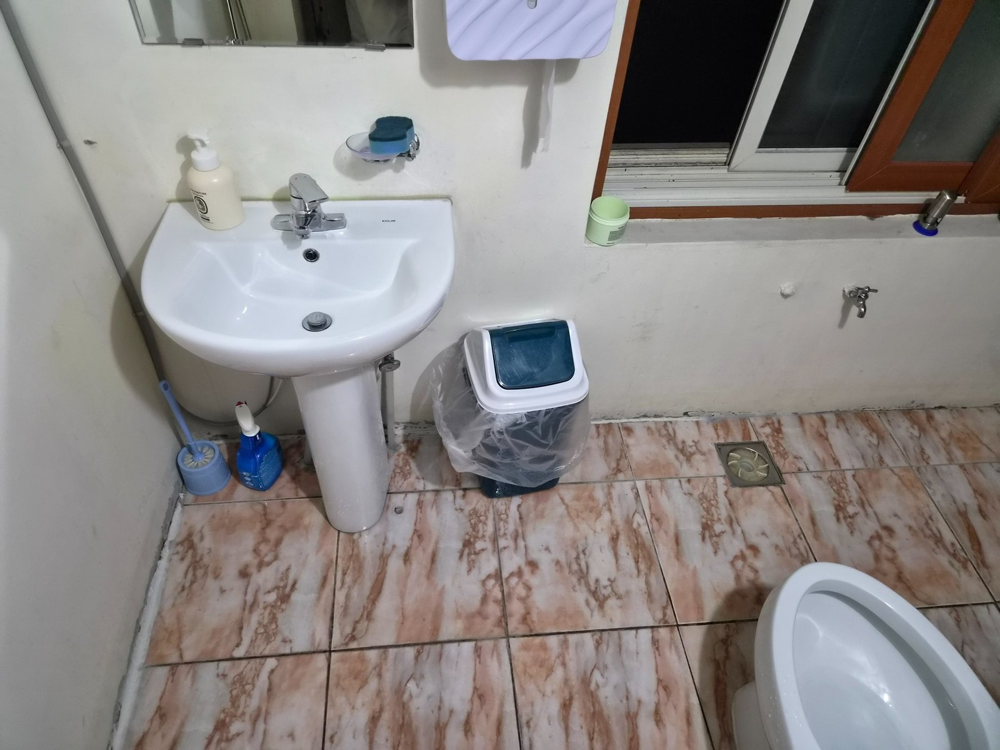
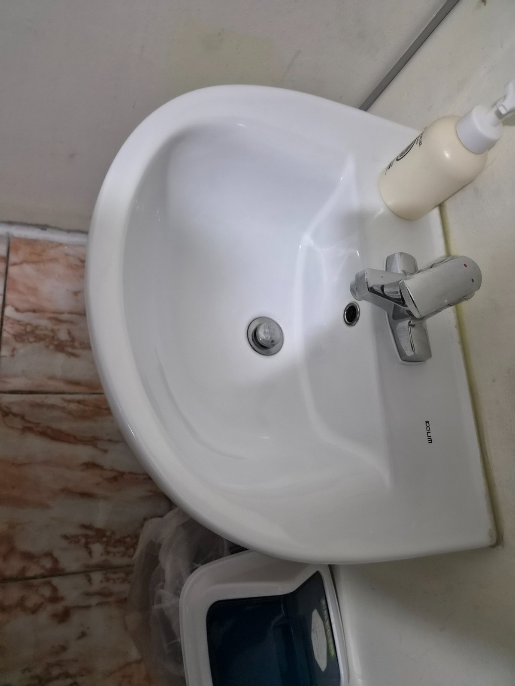
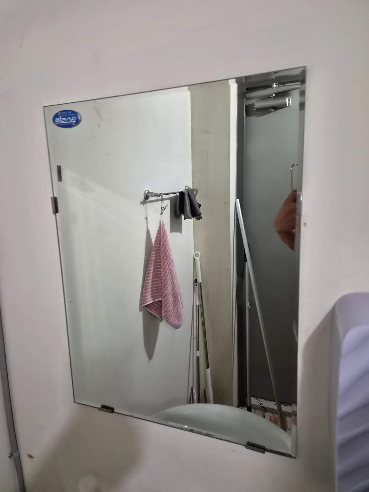
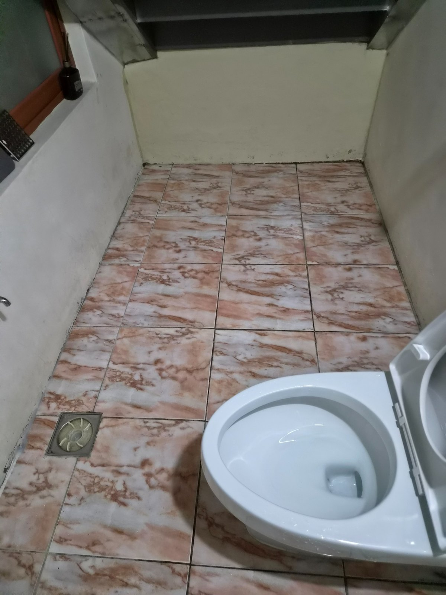

연식이 있는 공장 화장실은 시설 자체의 사용감과 청소로 제거할 수 있는 오염을 구분해 관리하는 것이 중요합니다. 이번 사진 묶음은 밝은 벽면과 무늬 타일 바닥의 화장실로, 세면대와 변기, 거울, 바닥을 중심으로 정기적인 관리가 필요한 형태입니다.

오래된 화장실일수록 꾸준한 관리가 중요합니다
타일과 벽면의 연식은 청소만으로 새것처럼 바뀌지는 않지만, 표면에 쌓이는 먼지와 물때, 생활 오염을 주기적으로 제거하면 전체 공간을 훨씬 깔끔하게 유지할 수 있습니다. 시설 상태를 과장하지 않고 실제 관리 가능한 범위를 기준으로 작업합니다.


바닥과 배수구 주변은 냄새 관리와 연결됩니다
공장 화장실은 작업복과 안전화 착용 인원이 자주 이용하는 경우가 많아 바닥 오염이 빠르게 누적될 수 있습니다. 바닥 전체와 배수구 주변, 변기 옆 좁은 공간까지 놓치지 않고 확인하는 것이 중요합니다.

김해 공장 밀집지역 정기청소 상담
김해 지역 공장, 창고, 사무실이 함께 있는 사업장은 화장실뿐 아니라 사무공간과 계단, 공용부를 묶어 관리할 수 있습니다. 퍼펙트케어는 현장 규모와 이용량을 확인한 뒤 필요한 범위만 정리해 무료 방문견적으로 안내합니다.
김해 공단·산업단지 사업장 청소 상담
김해 주촌·진례·한림·대동 등 공장과 사무실이 밀집한 지역을 포함해 화장실 정기청소 상담이 가능합니다. 현장 규모, 직원 수, 방문객 수, 화장실 이용량, 운영시간, 바닥 오염 정도와 관리 범위를 확인한 뒤 무료 방문견적으로 안내합니다.